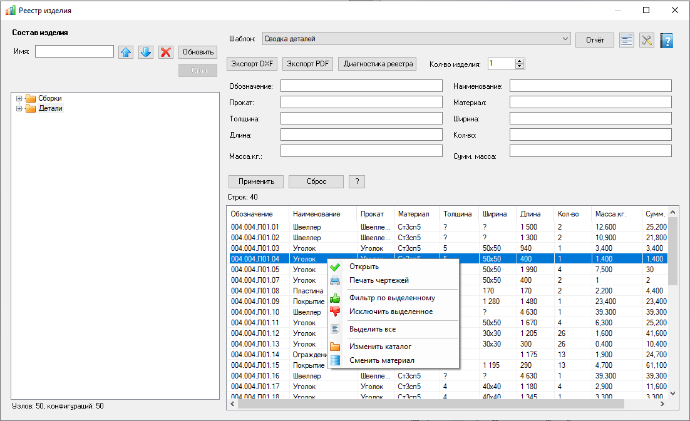

Реестр изделия
Состав активной сборки: дерево каталогов (разделов), таблица конфигураций по шаблону столбцов, отчёты (включая «Состав сборки»), хаб экспорта DXF/PDF и диагностика путей. Агент не обязателен.
Как открыть
Лента Velum → Реестр изделия. Активный документ должен быть сборкой. Доступно и администратору, и пользователю.
Основные области
- Состав изделия — дерево каталогов (разделов). Поиск по полю «Имя:», переходы по результатам. Обновить сбрасывает кэш и перечитывает состав; Стоп прерывает длительную операцию.
- Шаблон столбцов — выпадающий список шаблона, кнопки Экспорт / Импорт (сохранение/загрузка файла шаблонов), кнопка … (настройки столбцов).
- Строка кнопок — кнопки Применить, Сброс, ? (маски фильтров, см. справку) и Состав (открывает отчёт «Состав сборки» в браузере). Кнопка «Состав» прижата к правому краю строки.
- Фильтры — поля над списком, активируются кнопкой Применить.
- Таблица — строки конфигураций/компонентов; внизу при необходимости итоги по столбцам (Sum/Min/Max/Avg).
- Отчёт / Отчёты — сформировать HTML по текущему виду или открыть список ранее сохранённых (отчёты).

Реестр изделия: слева состав (каталоги/позиции), справа шаблон столбцов, строка кнопок (Применить, Сброс, ?, Состав), фильтры свойств и таблица строк. Ошибка в формуле ячейки может отображаться как «#ошибка…».
Строка кнопок
| Элемент | Что делает |
|---|---|
| Применить | Активирует текущие значения полей фильтров и обновляет таблицу. |
| Сброс | Сбрасывает все поля фильтров и обновляет таблицу. |
| ? | Справочная информация о масках фильтров (справка). |
| Состав | Открывает в браузере отчёт «Состав сборки» — дерево компонентов с обозначениями, наименованиями и количеством (см. отчёты). |
Типовой порядок работы
- Откройте сборку в SOLIDWORKS и вызовите реестр.
- Выберите или настройте шаблон столбцов.
- Настройте фильтры и нажмите Применить.
- Сформируйте отчёт «Состав сборки» или сохраните HTML-отчёт кнопкой Отчёт.
- При необходимости выполните экспорт DXF/PDF.
Контекстные меню
Дерево каталогов (изменения — для администратора): Добавить каталог, Переименовать, Удалить.
Список:
- Открыть — открыть документ позиции в SOLIDWORKS.
- Печать чертежей — выбрать и отправить на печать связанные чертежи выделенных позиций.
- Фильтр по выделенному — подставить значения выделенных ячеек одного столбца в поле фильтра (
=); при той же маске — дописать через|, при другой — диалог: добавить с новой маской / заменить поле / отмена. - Исключить выделенное — то же с маской
!=. - Выделить все.
- Изменить каталог / Сменить материал — для администратора: назначить раздел или материал выделенным строкам.
Данные на диске
Шаблоны столбцов и служебные данные реестра изделия — в %ProgramData%\VELUM\AssemblyRegistry. Последний выбранный шаблон запоминается в настройках. HTML-отчёты — в каталоге отчётов из настроек проекта.
Справочник шаблонов
Открывается кнопкой … рядом с выбором шаблона столбцов (или Копировать в окне настроек).
- Содержит список имён шаблонов. Для администратора: добавление, удаление, переименование.
- Удаление — подтверждение с пояснением, что изменения вступят в силу при нажатии кнопки «Применить».
- Фильтр — поле над списком для быстрой фильтрации по имени.
- Двойной клик по строке — выбор шаблона и закрытие окна.
Связанные окна
| Окно | Назначение |
|---|---|
| Настройки столбцов реестра изделия | Шаблон: формулы, фильтры, итоги, группировка, сортировка. |
| Шаблоны столбцов | Справочник имён шаблонов (копирование, переименование). |
| Подстановки формулы | Вставка Round, [FileName]/[ИмяФайла], [Quantity]/[Кол-во] и др. |
| Отчёты реестра изделия | Список HTML-отчётов, включая «Состав сборки». |
| Изменить каталог | Назначить каталог (раздел) выделенным строкам. |
| Печать чертежей | Пакетная печать чертежей по выделенным позициям. |
| Диагностика состава сборки | Битые пути и отсутствующие файлы. |